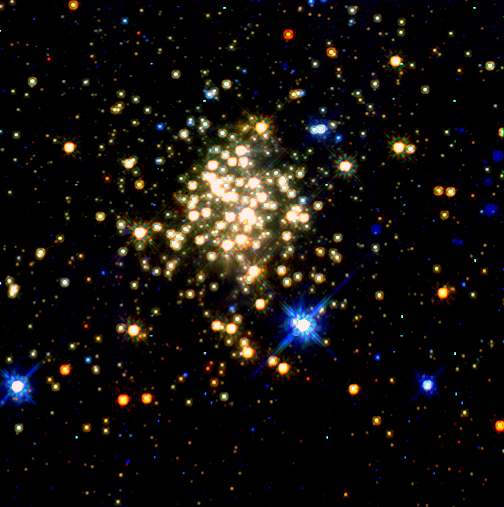

Star cluster at a distance of 8pc from the Galactic center
 Simulation of a star cluster with 12288 stars (taken from a Scalo mass
function between 0.3 and 100 solar mass) at a distance of 8pc from the
Galactic center. At this instant the cluster has an age of about 0.2
million years. The cluster has a diameter (virial radius) of 0.25pc.
The colors and sizes of the stars represent their effective
temperature and apparent luminosity. The background object represents
the Galactic center with part of a spiral dust arm. The Galactic
center is to the upper right corner of the image.
Simulation of a star cluster with 12288 stars (taken from a Scalo mass
function between 0.3 and 100 solar mass) at a distance of 8pc from the
Galactic center. At this instant the cluster has an age of about 0.2
million years. The cluster has a diameter (virial radius) of 0.25pc.
The colors and sizes of the stars represent their effective
temperature and apparent luminosity. The background object represents
the Galactic center with part of a spiral dust arm. The Galactic
center is to the upper right corner of the image.
Many stars are currently leaving the cluster. We are looking from the stream of stars which leave the cluster through the third Lagrangian point in the combined potential of the Galaxy and cluster. These stars have circumgalactic velocities slightly higher than the bulk motion of the cluster.
All calculations are performed on the GRAPE-6 at Tokyo University using the starlab toolset. The trajectories of the stars are calculated with kira and the evolution of the stars was computed with SeBa (for details see Portegies Zwart, Makino, McMillan and Hut 2002, ApJ in press or the more theoretical paper by Portegies Zwart and McMillan ApJ submitted).

The simulation can best be compared with the observed Arches star
cluster. This cluster contains about 10000 stars and is located at a
(projected) distance of 30pc from the Galactic center. Even with the
Hubble Space Telescope only
the brightest stars are visible in this image. The cluster therefore
has a spherical appearence, unlike the simulated cluster above.
{kind=link}